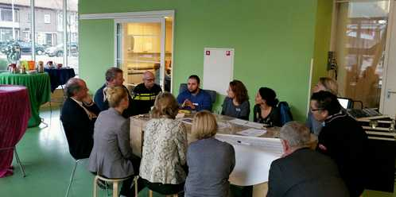
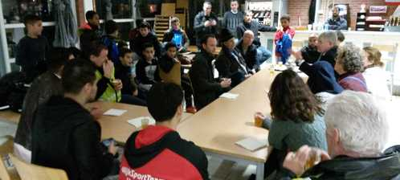

Burgemeester Fotodagboek Zaterdag 6 en zondag 7 augustus
Trek m'n zwembaantjes en begeef me vervolgens, samen met adviseur bestuurlijke zaken Sanne van den Broek, richting het Rotterdamse Stadhuis aan de Coolsingel. Vanochtend zijn ambtgenoot Ahmed Aboutaleb en raadsgriffier Han van Midden gastheer van een seminar ‘Verbetering op komst’, over de dalende opkomstcijfers bij lokale verkiezingen. Onder de ervaren leiding van de journalist Clairy Polak ontstaat in de Burgerzaal een aardig debat met mijn ambtgenoten Tjerk Bruinsma (Leerdam), Marjan van Kampen (Schagen), Arno Brok (Dordrecht) en de zaal over wat er wel en niet werkt. Leuk om te mogen deelnemen aan een relevant thema als dit en fijn om mijn goede vriend en oud-collega Edzard van Holthe (raadsgriffier Nieuwkoop) te treffen. Pleeg onderweg terug een aantal telefoontjes. Geef onder andere een telefonisch interview aan Frans van Drimmelen (Dröge&Van Drimmelen). Onderwerp: het InterProvinciaal Overleg.
Alinea met class 'citaat':
Ontvang, terug op het Stadskantoor, dy en Robert, hoofdconducteur en machinist bij de NS. Leuk stel.
Ga naar de Da Costa school in Hoograven. Spreek daar met verschillende vertegenwoordigers vanuit het onderwijs over signalering en voorkoming van radicalisering en polarisatie in het onderwijs. In het fraaie pand aan de Duurstedelaan vindt bijeenkomst voor de wijk Zuid (Lunetten, Hoograven en Transwijk) plaats.
Alinea met class 'citaat-groot':
Ontvang, terug op het Stadskantoor, dy en Robert, hoofdconducteur en machinist bij de NS. Leuk stel.
Word ontvangen door dagvoorzitter Hedy Kloosterman en de beleidsadviseurs onderwijs Anita Lubberdink en La'shan Lewis. Neem na de presentatie door Paul van Beijnum van veiligheid (actieplan Utrecht zijn we samen) deel aan twee van de drie werkgroepen. De betrokkenheid bij het thema is enorm. Leerkrachten staan iedere dag voor de klas en weten als geen ander met welke dilemma's je rond dit thema kunt worden geconfronteerd. Ze verdienen onze steun, vandaar de drie wijkbijeenkomsten waarvan ik er vandaag eentje bijwoon.
Blockquote met een alinea erbinnen:
Ontvang, terug op het Stadskantoor, dy en Robert, hoofdconducteur en machinist bij de NS. Leuk stel.
Blockquote, kale tekst erin:
Het fort ligt verborgen tussen een spoorlijn en verrommeld gebied met industrieloodsen en volkstuintjes.
Blockquote met classnaam 'citaat-groot' met alinea's erbinnen:
Ontvang, terug op het Stadskantoor, dy en Robert.
Hij hoofdconducteur, zij machinist.
Leuk treinstel.

Bezoek in verzorgingshuis Tuindorp-Oost aan de Winklerlaan de 100 jaar geworden mevrouw Hooper-Pondman. Feliciteer de oorspronkelijk in voormalig Nederlands-Indië geboren en in Den Haag getogen eeuwelinge van harte. Begroet een aantal medebewoners, krijg van mevrouw Hoevelaken een zelfgemaakt gelukspoppetje in rood wit en blauw. 'Brengt echt geluk hoor!', roept ze mij bij het afscheid vrolijk toe. Avondeet thuis en ga rond half zeven richting Overvecht, naar het wijkbureau aan de Zamenhofdreef, voor een wijkveiligheidsbezoek. De gebiedsmanagers veiligheid Annemieke Tomassen, Arne Mooij en Frank van der Mark en de integrale Boa’s Jan Schuin en Björn Straatman staan me al op te wachten. We fietsen naar sportpark en voetbalvereniging de Dreef waar vrijwilligers en bestuur van de club vertellen over hun activiteiten rond de jaarwisseling. Hun inzet is bedoeld als bijdrage aan een 'feestelijk' verloop. Een aantal toekomstige spelers van FC Utrecht melden zich hun training ook even in de kantine. Stappen weer op de fiets, nu richting winkelcentrum Gagelhof. Het winkelcentrum heeft al geruime tijd te maken met overlast voor bewoners en ondernemers. Spreek later even verderop, in buurthuis De Boog aan de Gambiadreef, met de betrokkenen bij de aanpak om dit tegen te gaan. De wijkagent, de wijkboa’s, de verslavingszorg, het Leger des Heils en betrokken bewoners lijken elkaar te kunnen vinden in het stellen van grenzen en het bieden van hulpverlening. De problematiek is venijnig. Nuttig bezoek. Heb later op de avond, terug thuis, veelvuldig telefonisch overleg met deze en gene.
